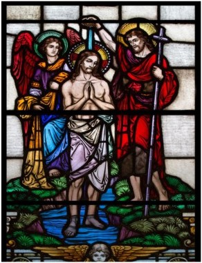

0025 John the Baptist, an Apocalyptic preacher, feeds the hopes of Apocalyptic Jews who are expecting a human Messiah descended from David to rule over an independent restored kingdom of Israel.

0029 Herod Antipas marries Herodias (who had divorced his brother Philip), and executes John the Baptist, either because he objected to Antipas’ marriage to Herodias, or because John was an eloquent revolutionary, fond of quoting Is 40:3 “prepare the way.”
0030 Ministry of Jesus - (See Part Two for a discussion of the criteria used to ferret out the “Historical Jesus.”) Jesus is born in Nazareth (a backward village so insignificant it is not mentioned once in the Hebrew Scriptures or Josephus) to Mary and Joseph (Joseph is never heard from again) around 4 BC, and had siblings - both brothers (James et al), and sisters (Mk 3:31). He is born and raised as a Jew, in an area of Galilee that had been forcibly converted to Judaism by Aristobolus I in 104 BCE.
Jesus is most probably trained to be a tekton - carpenter, or construction worker of some sort, and seems to have been drawn to the apocalyptic teaching of his “cousin” (Luke 1:36), John the Baptist. Beginning with his baptism by John, Jesus teaches an Apocalyptic message.
In Matthew, Jesus’ first recorded preaching (4:17 Repent: for the kingdom of heaven is at hand.) is a direct quote from John, and Jesus seems to have been guided into thinking of himself as the Messiah by his desire to fulfill John’s expectations. He begins his ministry in his native Galilee, but is not well received either by his family (Mk 3:21,31, John 7:5, Paul 1Cor 15) or the neighboring towns of Galilee (Mk 6:1, Lk 4, L 10, M 11). Though the chief Galilean cities of Cepherus and Tiberius are within walking distance, Jesus is never recorded as having gone there. He is a prophet without honor (Mk, John, Thomas), who has no home (Mk 8, Lk 9, John 15:18). Much in the mold of Isaiah, he shares John’s contempt for the Pharisees (Jews who emphasize minute adherence to the letter rather than the spirit of the Law) and Sadducees (“smug” priests of the Temple in Jerusalem and collaborators with Rome), and is concerned for the long-suffering multitudes.
He goes to Jerusalem at Passover apparently to cement his reputation as a prophet and to make his theological points, perhaps even to incite an armed uprising. He overturns the tables of money-changers and, as intended, attracts the unfavorable attention of the Jewish authorities by disrupting Temple activities and preaching the imminent arrival of the apocalyptic Kingdom of Heaven.
He is betrayed by his disciple Judas, who likely tells the Roman authorities that Jesus is claiming to be the Messiah and future ruler of Palestine. He is arrested (while with his band of armed “zealots”), tried by Pontius Pilate, crucified, and probably dies on the cross, though Josephus tells of two men who survived crucifixion. Details of his death are inconsistent (see notes below on Matthew 28). As for his “resurrection,” he is most likely buried in a mass grave, as was the usual Roman custom for those guilty of treason.
~~~~~~~~